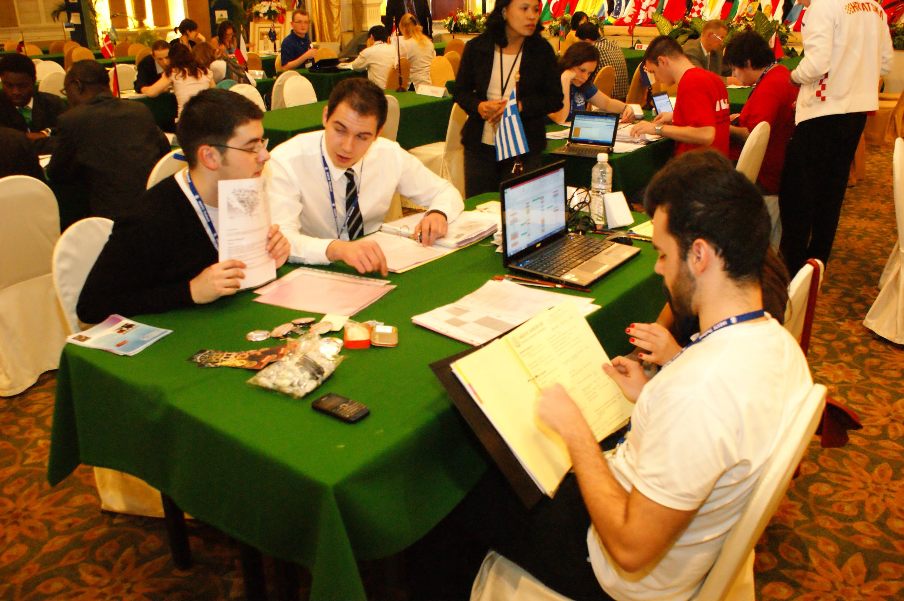
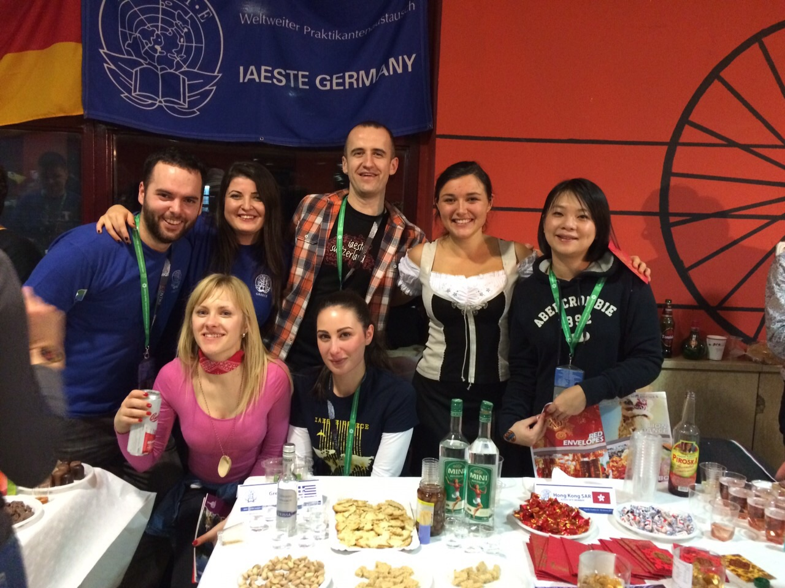

IAESTE
The International Association for the Exchange of Students for Technical Experiences (IAESTE) is a non-profit organization with national committees in over 80 countries. It offers opportunities for students to conduct a paid internship in a foreign country, promoting international understanding and acting as a source of cultural enrichment.
I was fortunate to be introduced in the organization during my studies in Greece, and from that time I served as an active member of the local committee of Athens for 6 years, with varying roles and responsibilities at local, national and international levels.

Some of my tasks included the improvement of the internal structure of IAESTE Athens, and the database and evaluation system of IAESTE Greece. Under my guidance as President of IAESTE Athens (2010-2012), the success rate of our nominees was increased by 24%. Moreover, the initiatives and projects I proposed and completed with the rest members, resulted in a spectacular rise in the popularity of IAESTE locally and nationally.
I was also responsible for the Social Media management, the organization of many internal and external activities, as the summer programme for the incoming trainees, cooperation with other NGOs, job raising, and presentations, and I finally represented IAESTE Greece in various international conferences.

It was a great experience that taught me to operate in a multicultural environment and significantly improved my social and interpersonal skills. More importantly, it gave me the opportunity to make friends all over the world.